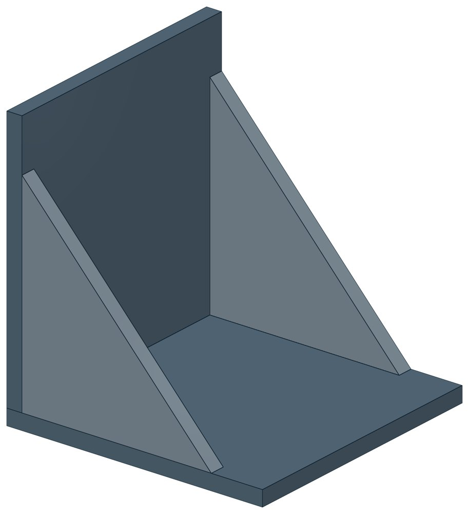

Опоры неподвижные для вертикальных коробов ОСТ 34-10-610-93
ОСТ 34-10-610-93. Допускаемая вертикальная нагрузка — до 65 кН, масса 10,1–17,9 кг.

- Документ
- ОСТ 34-10-610-93
- Исполнений
- 2
- Допускаемая вертикальная нагрузка
- до 65 кН
- Масса
- 10,1–17,9 кг
- 3D-модели
- у всех исполнений (условные: общий вид по габаритам)
Таблица исполнений ОСТ 34-10-610-93
| Обозначение | Код ПРОМБУРГ | Dнмм | Допускаемая вертикальная нагрузка, КнкН | Тип опоры | Количество на коробшт | Массакг | 3D |
|---|---|---|---|---|---|---|---|
| 01 ОСТ 34-10-610-93 | ПБ-34610-0000-1 | 325-920 | 28 | 1 | 2 | 10,1 | 3D |
| 02 ОСТ 34-10-610-93 | ПБ-34610-0000-2 | 630-2020 | 65 | 2 | 2 | 17,9 | 3D |
Чтобы заказать, сообщите обозначение и код ПРОМБУРГ: +7 (499) 325-51-35, promburg@yandex.ru.
Нормативные документы
- ОСТ 34-10-610-93 Опора неподвижная для вертикальных коробов. Типы и основные размеры — документ, по которому изготавливается изделие
Собрать узел с этим изделием
- Конструктор узла: собрать участок с компенсатором под свои данные труба, длина, среда, условия — состав узла и спецификация бесплатно
Другие типы раздела
Опоры трубопроводов ТЭС и АЭС (ОСТ 34-10-610…623-93)
- Блоки двухкатковые ОСТ 34-10-611-93
- Блоки катковые пружинные ОСТ 34-10-612-93
- Опора скользящая и неподвижная ОСТ 34-10-615-93
- Опора приварная скользящая и неподвижная ОСТ 34-10-616-93
- Опоры хомутовые скользящие ОСТ 34-10-617-93
- Опоры хомутовые неподвижные ОСТ 34-10-618-93
- Опора катковая ОСТ 34-10-619-93
- Опоры скользящие и неподвижные с направляющим хомутом ОСТ 34-10-620-93
- Опоры сварных отводов ОСТ 34-10-621-93
- Опоры трубчатые крутоизогнутых отводов ОСТ 34-10-622-93
- Опоры скользящие неподвижные ОСТ 34-10-623-93
Частые вопросы
Чем неподвижная опора отличается от подвижной?
Неподвижная закрепляет трубу в одной точке и принимает усилия от температурного расширения, давления и трения. Подвижная держит вес трубы и даёт ей перемещаться при нагреве. Неподвижные делят трассу на участки компенсации, подвижные стоят между ними. Место и тип каждой опоры задаёт проект.
Какую неподвижную опору выбрать: хомутовую, упорную, щитовую?
Выбор идёт по расчётной осевой силе и по тому, на что опора опирается. Малый диаметр и небольшая сила — хомутовая ТС-659. Нужна высота под изоляцию — хомутовая с корпусом ТС-670 или бугельная ТС-671. Труба проходит сквозь стенку — щитовая ТС-666, при большой силе усиленная ТС-667. Упор в балку или траверсу — двух- и четырёхупорные ТС-660, ТС-661, при больших нагрузках усиленные ТС-663, ТС-664.
По какому диаметру подбирать — Dн или Ду?
По наружному диаметру трубы Dн: именно он стоит в таблицах серии. Ду — условный проход, округлённая величина: Ду 100 соответствует Dн 108. В заявке указывайте Dн и толщину стенки трубы.
Какую нагрузку выдерживает опора?
Допускаемая нагрузка задана в таблице для каждого исполнения — она в первой группе колонок каждой карточки. Хомутовая ТС-659 — осевая Q от 5 до 25 кН, щитовая ТС-666 — от 50 до 3300 кН, хомутовая с корпусом ТС-670 — Q до 380 кН и боковая T до 200 кН.
Кто считает нагрузку на неподвижную опору?
Нагрузку определяет проектировщик расчётом трубопровода на прочность и компенсацию: она зависит от схемы трассы, а не только от диаметра. По заданным Dн, стенке и нагрузкам Q, P, T подбирается исполнение из таблицы.
Неподвижную опору приваривают к строительной конструкции?
Упоры и щиты приваривают к трубе, а к несущей конструкции они прилегают свободно, без приварки — так разгружаются от крутящих моментов и опора, и конструкция. У хомутовой ТС-659 упоры приваривают к трубе, а хомут — к балке.